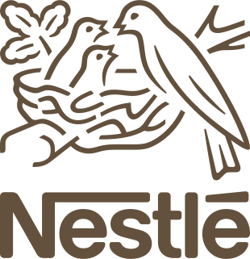
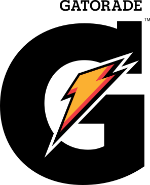

01
Redação para web
Artigos, notícias, newsletters, roteiros, legendas e páginas de produto. Texto claro, com SEO quando faz sentido e sem jargão quando não faz.
Jornalismo · Conteúdo · Comunicação interna
Sou Claudio Sousa. Há mais de 10 anos trabalho com jornalismo, conteúdo, mídias sociais e comunicação interna em redações, agências e empresas de tecnologia.
Disponível para trabalhos fixos e freelances
Claudio Sousa
Jornalista · Redator · Social media




01 Sobre
Comecei na redação — no sentido literal. Formado em Comunicação Social com habilitação em Jornalismo pela Universidade de Santo Amaro (UNISA), fiz reportagem, pauta e edição antes de passar para o outro lado do balcão: marcas, agências e mídias sociais.
Nos últimos dez anos, transitei por agências, veículos digitais e empresas de tecnologia. Atendi Unilever, Nestlé, Banco BMG, Gatorade e o grupo Stellantis. Vivi operações de social media em tempo real, pós-produção de campanhas para TV aberta e a rotina do atendimento publicitário — sempre com o texto no centro.
Também passei pelo setor de TI como QA na FIPT/Lenovo e mantenho estudos em programação, dados e inteligência artificial. Isso mudou a minha forma de trabalhar: mais organização, mais ferramenta e menos retrabalho.
Hoje busco posições fixas ou projetos freelance para escrever em web, mídias sociais e comunicação interna.
02 Serviços
01
Artigos, notícias, newsletters, roteiros, legendas e páginas de produto. Texto claro, com SEO quando faz sentido e sem jargão quando não faz.
02
Calendário editorial, copy de posts, moderação e resposta a comentários. Inclui gestão de crise, social listening e relatórios de KPI.
03
Comunicados, campanhas internas, newsletters para colaboradores e padronização de tom de voz. Informação que chega — e é lida.
04
Interface entre cliente, criação e produtoras. Organizo pautas, reviso materiais e acompanho entregas para TV, OOH e digital.
Também faço revisão, copidesque e adaptação de conteúdo para diferentes canais. Precisa de algo fora dessa lista? Me conta.
03 Trabalhos
Uma seleção de trabalhos em atendimento, conteúdo e jornalismo.
Atendimento e pós-produção das campanhas. Revisão criteriosa dos filmes, conferência de ofertas e das regiões atendidas pela rede, envio às emissoras de TV aberta e publicação em redes sociais e YouTube.
Ver o caso no NotionProdução diária de newsletters para as equipes de criação e gerência da Isla, com tendências de redes sociais, novidades sobre os assets do cliente e movimentos dos concorrentes.
Ver o caso no NotionReportagem sobre as condições da represa nos bairros mais distantes da Zona Sul de São Paulo, na região do Grajaú. Com depoimentos de moradores, o texto expôs os problemas da água e a ausência do poder público.
Ver o caso no NotionMais materiais — incluindo campanhas e textos avulsos — estão no portfólio completo no Notion.
04 Depoimentos
Conheço o Claudio desde os tempos em que éramos analistas na Plusoft. Posso dizer que é uma pessoa extremamente dedicada e detalhista. Está sempre antenado nas novidades, pronto para escutar e para ajudar. Um dos melhores analistas que tive o prazer de encontrar na minha jornada profissional.”
Claudio é um profissional excelente, que gosta de desafios e dá sempre o seu melhor. Como Community Manager, cuidou de pelo menos 30 marcas diferentes, com versatilidade para mudar de persona e se adaptar aos diferentes públicos e segmentos. Realizava o treinamento dos colegas e, no dia a dia, resolvia as dúvidas do time.”
05 Trajetória
2025
Grupo VATI
Pautas e produção para Citroën, Fiat, Jeep, RAM e Peugeot em múltiplos formatos: filme, OOH, peças gráficas e HTML.
2024
Arizona
Campanha de Black Friday do Carrefour, da revisão das peças à entrega para as emissoras de TV aberta.
2023
Isla · Gatorade
Conteúdo e comunidade para lançamentos, eventos patrocinados e parcerias com CBF, Palmeiras e Flamengo.
2022–23
FIPT · Lenovo
Testes de hardware e compatibilidade com Linux; apoio ao time de desenvolvimento de drivers.
2021–22
Atento · Unilever
Atendimento digital, gestão de crise e ações de delight para as marcas da Unilever. Respondi temporariamente como supervisor de operações.
2015–19
Plusoft · Nestlé e Banco BMG
Relacionamento digital, relatórios de métricas e engajamento no Facebook, Instagram, Twitter e LinkedIn.
2013–14
Avon
Relatórios de ordens de serviço e manutenções na unidade fabril.
06 Contato
Busco oportunidades fixas e projetos freelance em redação para web, mídias sociais e comunicação interna. Tem uma vaga ou um projeto? Me escreva.